🎎 文化・暮らしから探す
民族・ことわざなど、暮らしと文化から世界193か国をめぐります。

アフガニスタン
パシュトゥン人、タジク人、ハザラ人 ／ 「一人の手では、拍手はできない」— 協力してこそ大きなことができるという意味の言葉。

アルバニア
アルバニア人、ギリシャ系少数民族 ／ 「客は、一年かけて見る家主のことを一時間で見る」— 外から来た人の視点は、住んでいる人が気づかないことを見つけるという意味。

アルジェリア
アラブ系、ベルベル系 ／ 「ラクダは自分のこぶを見ず、仲間のこぶを見る」— 自分の弱点より他人の欠点に目が向きやすいという戒め。

アンドラ
アンドラ系、スペイン系、ポルトガル系 ／ 「粉じんを嫌う人は、脱穀場へ行ってはいけない」— 問題を避けたいなら、問題が起きる場所に近づかないという意味。

アンゴラ
オヴィンブンドゥ人、キンブンドゥ人、バコンゴ人 ／ 「団結は力になる」— 力を合わせることで、一人ではできないことも実現できるという意味。

アンティグア・バーブーダ
アフリカ系 ／ 「一つずつのココナツで、かごがいっぱいになる」— 小さな努力を積み重ねれば、大きな成果になるという意味。

アルゼンチン
ヨーロッパ系、メスティーソ、先住民 ／ 「急ぐ人には、悪魔も手を貸す」— 焦って行動すると思わぬ失敗を招くという戒め。

アルメニア
アルメニア人 ／ 「客は、神からの贈り物である」— 訪ねてきた人を大切に迎える、もてなしの考え方を表す言葉。

オーストラリア
ヨーロッパ系、アジア系、先住民アボリジニ ／ "No worries"(心配ないよ)— 楽観的な国民性を表すオーストラリア英語の言い回し。

オーストリア
オーストリア人、その他ヨーロッパ系 ／ 「多くの料理人がいると、料理は台なしになる」— 関わる人が多すぎると、物事がうまく進まないという意味。

アゼルバイジャン
アゼルバイジャン人 ／ 「急ぐ者は、道を失う」— 落ち着いて判断することの大切さを表す言葉。

バハマ
アフリカ系 ／ 「海は、すべての川を受け入れる」— 多様なものを受け入れる、広い心の大切さを表す言葉。

バーレーン
バーレーン人(アラブ系)、南アジア系移民 ／ 「急ぐ者は、後悔する」— 急いで決めると後悔しやすいという意味。

バングラデシュ
ベンガル人 ／ 「川は、流れながら道をつくる」— 変化を恐れず進めば、新しい道が開けるという意味。
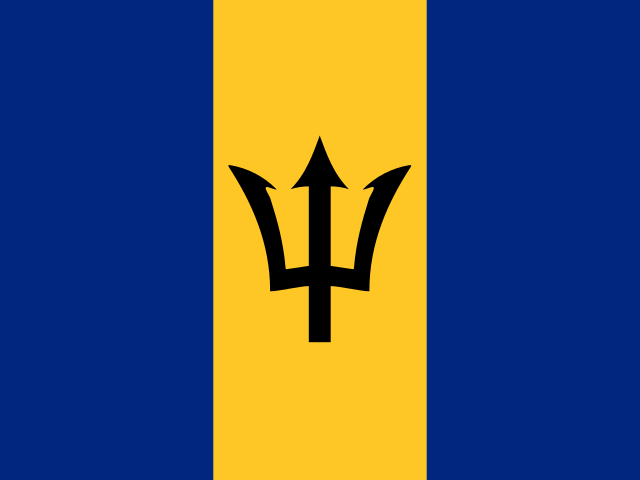
バルバドス
アフリカ系 ／ 「一人では、家は建たない」— 協力しなければ、大きな仕事は完成しないという意味。

ベラルーシ
ベラルーシ人、ロシア系 ／ 「森を守る人は、森に守られる」— 自然を大切にすれば、自然も人を支えてくれるという意味。

ベルギー
フラマン人、ワロン人 ／ 「急がば、遠回り」— 安全で確実な方法を選ぶほうが、結果的に早いことがあるという意味。
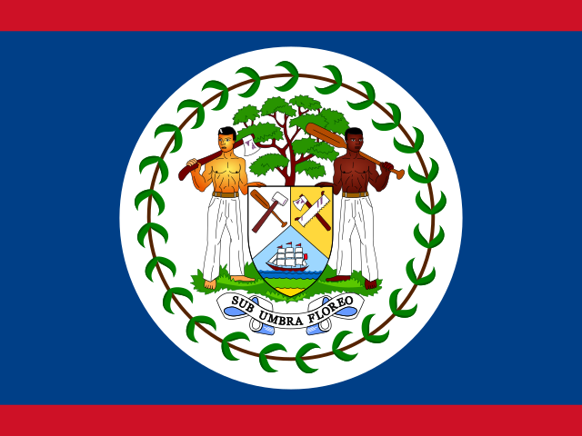
ベリーズ
メスティーソ、クレオール、マヤ系 ／ 「木を植える人は、木陰を受け取る」— 将来のための努力が、次の世代を助けるという意味。

ベナン
フォン人、ヨルバ人、アジャ人 ／ 「一つの指では、石を持ち上げられない」— 一人の力だけでは難しいことも、協力すれば可能になるという意味。

ブータン
ンガロップ人(ゾンカ系)、ローツァンパ人(ネパール系)、先住少数民族 ／ 「幸せは、家の中から始まる」— 幸福は物の多さだけでなく、身近な人との関係から生まれるという意味。
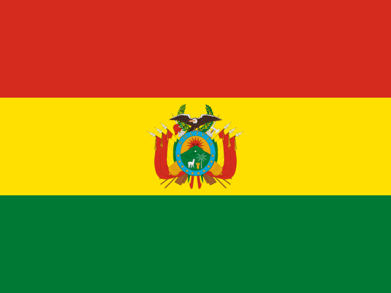
ボリビア
先住民(ケチュア人、アイマラ人など)、メスティーソ ／ 「一人で歩くより、仲間と歩くほうが遠くへ行ける」— 協力の大切さを表す言葉。

ボスニア・ヘルツェゴビナ
ボシュニャク人、セルビア系、クロアチア系 ／ 「良い言葉は、鉄の扉を開く」— 思いやりのある言葉には人を動かす力があるという意味。

ボツワナ
ツワナ人、カランガ人 ／ 「人は、人によって人になる」— 人とのつながりが人を育てるという意味。

ブラジル
ヨーロッパ系、アフリカ系、先住民 ／ "Deus é brasileiro"(神はブラジル人だ)— 恵まれた自然を誇るときに使われる言い回し。

ブルネイ
マレー系、華人系、先住民族 ／ 「知識は、宝より重い」— 知識は長く役立つ大切な財産だという意味。

ブルガリア
ブルガリア人、トルコ系、ロマ ／ 「良い友は、遠くても近い」— 距離よりも信頼が大切だという意味。

ブルキナファソ
モシ人、フルベ人、ボボ人 ／ 「一本の指では、石を持ち上げられない」— 一人では難しいことも、協力すれば可能になるという意味。

ブルンジ
フツ人、ツチ人、トゥワ人 ／ 「急がず、しかし止まらず」— 焦らずに前へ進み続けることの大切さを表す言葉。

カーボベルデ
混血(クレオール、メスティーソ)、アフリカ系 ／ 「海を渡るには、風を読む」— 周囲の状況を見極めて行動することが大切、という意味。

カンボジア
クメール人 ／ 「知恵は、年齢より大切」— 経験だけでなく、考える力が大切だという意味。

カメルーン
バミレケ人、フルベ人、ドゥアラ人など多数の民族 ／ 「一本の木では、森にはならない」— 一人の力だけでなく、協力が大切だという意味。

カナダ
ヨーロッパ系、アジア系、先住民族(ファーストネーション、イヌイットなど) ／ 「多くの手があれば、仕事は軽くなる」— 協力すれば一人の負担を減らせるという意味の英語のことわざ。

中央アフリカ共和国
バヤ人、バンダ人、サラ人 ／ 「村に抱かれない子どもは、村を焼いて暖を取る」— 周囲の支えと居場所の大切さを表す、アフリカで広く知られる表現。

チャド
サラ人、アラブ系、カヌリ人 ／ 「道を尋ねる人は、道に迷わない」— 質問することが正しい方向へ進む助けになるという意味。
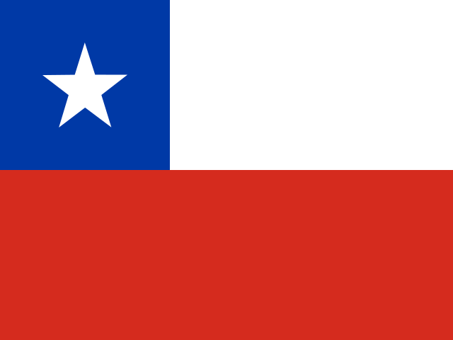
チリ
ヨーロッパ系とメスティーソ、先住民マプチェ、その他先住民 ／ 「手の中の鳥一羽は、空の鳥二羽より価値がある」— 確実に手にしているものを大切にするという意味のスペイン語のことわざ。

中国
漢民族、チワン族、満州族など55の少数民族 ／ 「千里の行も、足下より始まる」— 大きな目標も最初の一歩から始まるという意味。

コロンビア
メスティーソ、ヨーロッパ系、アフリカ系 ／ 「遅くても、しないよりはよい」— 始めるのが遅くても行動する価値があるという意味のスペイン語圏のことわざ。

コモロ
コモロ人(アフリカ系・アラブ系・マダガスカル系の混合) ／ 「団結は力」— 小さな力でも結束すれば大きくなるという意味。

コスタリカ
ヨーロッパ系とメスティーソ、ムラート、先住民 ／ 「プラ・ビダ」(Pura Vida、素晴らしい人生)— 国民の楽観的な生き方を表す挨拶であり合言葉。

コートジボワール
アカン系、ヴォルタ系、北マンデ系 ／ 「一本の腕輪は音を立てない」— 一人だけでは物事は成し遂げられないという意味。

クロアチア
クロアチア人、セルビア人、その他 ／ 「静かな川は、深い」— 物静かな人ほど深い考えを持っているという意味。

キューバ
ムラート(混血)、ヨーロッパ系、アフリカ系 ／ 「タバコを吸わない人には、火を貸すな」— 相手の状況をよく理解してから行動すべきという意味。

キプロス
ギリシャ系キプロス人、トルコ系キプロス人 ／ 「怒りは、悪い助言者」— 感情的な判断は誤りを招きやすいという意味。

チェコ
チェコ人、モラビア人、その他 ／ 「二羽のウサギを追う者は、一羽も捕まえない」— 欲張ると何も得られないという意味。

コンゴ民主共和国
コンゴ人、ルバ人、モンゴ人など200以上の民族 ／ 「一本の手では、束を結べない」— 協力なしにはまとまった仕事はできないという意味。

デンマーク
デンマーク人、その他ヨーロッパ系、移民系 ／ 「小さな塊が大きなものを作る」— 小さな努力の積み重ねが大きな成果を生むという意味。
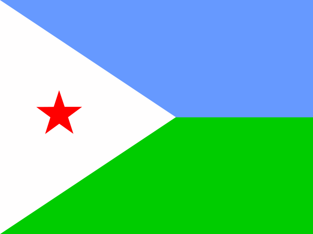
ジブチ
ソマリ系(イッサ人)、アファル人 ／ 「らくだを持つ者は、水を心配する」— 大切なものを持つ人ほど、それを守る責任と心配を抱えるという意味。
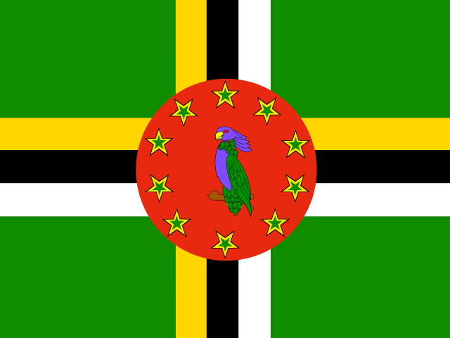
ドミニカ国
アフリカ系、先住民カリブ人(カリナゴ)の子孫、混血 ／ 「小さな斧でも、大きな木を倒せる」— 小さな力でも根気強く続ければ大きな成果を得られるという意味。

ドミニカ共和国
混血(ムラート)、ヨーロッパ系、アフリカ系 ／ 「水を運ぶ壺は、いつか割れる」— 危険を繰り返せば、いつか失敗するという戒め。

エクアドル
メスティーソ、先住民、アフリカ系・ヨーロッパ系 ／ 「もっと知る者は、もっと悪魔を疑う」— 経験を積むほど、物事を慎重に見極められるという意味。

エジプト
エジプト人(アラブ系)、ベドウィン、ヌビア人 ／ 「知らないことは災いのもと」— 学ぶことの大切さを説く現地のことわざ。

エルサルバドル
メスティーソ、ヨーロッパ系、先住民 ／ 「働く者は、パンを得る」— 努力する者が成果を得るという意味の言葉。
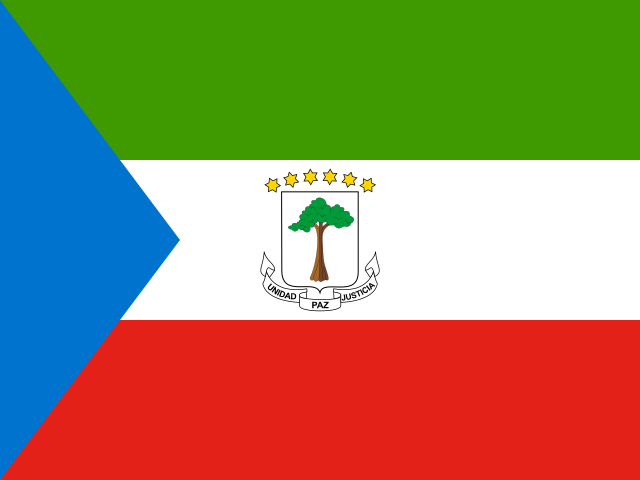
赤道ギニア
ファン人、ブビ人 ／ 「川の水を飲む者は、その源を忘れてはならない」— 恩を忘れてはいけないという意味。
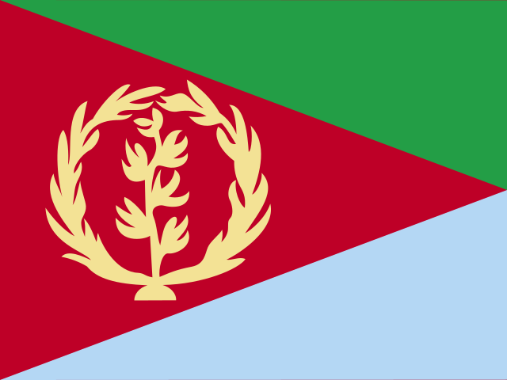
エリトリア
ティグリニャ人、ティグレ人、その他 ／ 「一本の指では、虱もつぶせない」— 協力の大切さを表す言葉。

エストニア
エストニア人、ロシア系 ／ 「仕事をした後の休息は甘い」— 努力の後の休息が価値あるものになるという意味。

エスワティニ
スワジ人 ／ 「王は、民の口である」— 指導者は民の声を代弁する存在だという意味。
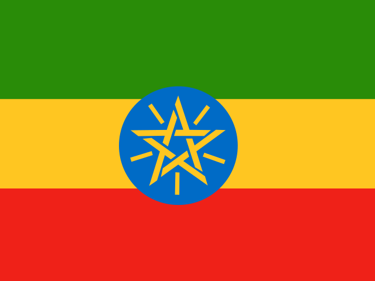
エチオピア
オロモ人、アムハラ人、ティグライ人 ／ 「クモの巣も、集まれば獅子を縛る」— 小さな力も団結すれば大きな力になるという意味。


ガボン
ファン人、プヌ人、その他バントゥー系民族 ／ 「木を切る者は、日陰を失う」— 目先の利益のために大切なものを失う愚かさを説く言葉。

ガンビア
マンディンカ人、フラ人、ウォロフ人 ／ 「川の水を運ぶ人は、雨を軽んじない」— 日々の努力の積み重ねを大切にするという意味。

ジョージア
ジョージア人、アゼルバイジャン系、アルメニア系 ／ 「客は、家の飾りである」— 訪れた客を大切にもてなす伝統的な考え方を表す言葉。

ドイツ
ドイツ系、トルコ系、その他ヨーロッパ系 ／ 「早起きは三文の徳」(Morgenstund hat Gold im Mund)— 早起きして行動することの価値を説くドイツのことわざ。

ガーナ
アカン人、エウェ人、ダゴンバ人 ／ 「一本の指では虱をつぶせない」— 協力の大切さを表すガーナのことわざ。

ギリシャ
ギリシャ人 ／ 「一羽のツバメで春は来ない」— 一つの良い兆候だけで物事全体が良くなるとは限らないという意味。
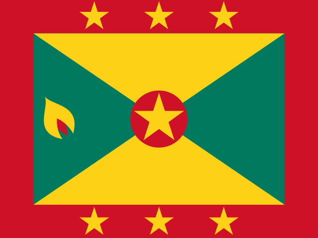
グレナダ
アフリカ系、混血、インド系 ／ 「一本の指では、かゆいところをかけない」— 協力の大切さを表す言葉。

グアテマラ
メスティーソ(ラディーノ)、マヤ系先住民 ／ 「川を渡るまでは、馬を替えるな」— 物事の途中でやり方を変えるべきではないという意味。

ギニア
フラ人、マリンケ人、スース人 ／ 「一本の木では、森にはならない」— 協力の大切さを説く西アフリカで広く知られる表現。

ギニアビサウ
バランタ人、フラ人、マンジャコ人 ／ 「一人の知恵より、多くの知恵」— 協力して考えることの大切さを表す言葉。

ガイアナ
インド系、アフリカ系、混血 ／ 「一人では、荷物は運べない」— 協力の大切さを表す言葉。


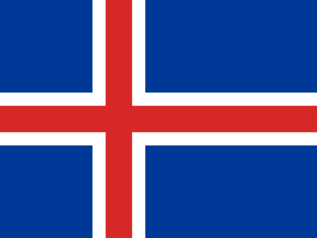
アイスランド
アイスランド人(北欧系) ／ 「賢い人は、自分の欠点を知っている」— 自己を客観的に見つめる大切さを表す言葉。

インド
インド・アーリア系、ドラヴィダ系、その他多数の民族集団 ／ 「千里の道も、一歩から」— どんな大きな目標も小さな一歩から始まるという意味。

インドネシア
ジャワ人、スンダ人、その他多数の民族集団 ／ 「深い川は静かに流れる」— 本当に力のある人ほど、控えめであるという意味。

イラン
ペルシャ人、アゼルバイジャン系、クルド人 ／ 「壁にも耳がある」— 秘密は漏れやすいので言動に気をつけよという意味。
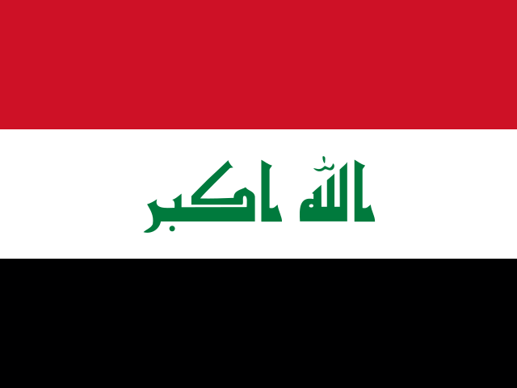
イラク
アラブ人、クルド人 ／ 「急ぐ者は、つまずく」— 焦って行動すると失敗しやすいという意味。

アイルランド
アイルランド人(ケルト系) ／ 「壊れた時計も、一日に二度は合う」— どんなに調子が悪くても、たまには正しいことがあるという意味。
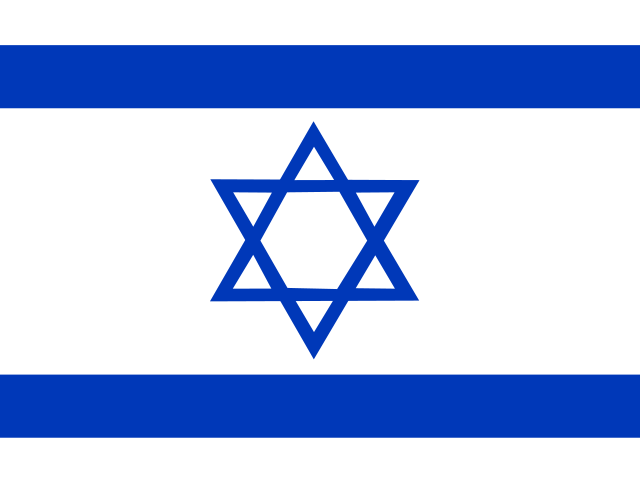
イスラエル
ユダヤ系、アラブ系 ／ 「時は金なり」— 時間を大切にすべきだという、広く知られる言葉。

イタリア
イタリア人 ／ 「すべての道はローマに通ず」— 目的に至る方法は一つではないという意味。


カザフスタン
カザフ人、ロシア系 ／ 「土地を知らずに旅立つな」— 準備の大切さを説く言葉。

ケニア
キクユ人、ルヒヤ人、カレンジン人 ／ "Haraka haraka haina baraka"(スワヒリ語:急いては事を仕損じる)— 焦らず物事を進めることの大切さを説くことわざ。

キリバス
ミクロネシア系(I-Kiribati) ／ 「海を知る者は、風を読む」— 自然を理解し、それに合わせて行動する知恵を表す言葉。

クウェート
クウェート人(アラブ系)、他のアラブ系、南アジア系 ／ 「客をもてなす者には、幸運が訪れる」— もてなしの精神を大切にする文化を表す言葉。

キルギス
キルギス人、ウズベク系、ロシア系 ／ 「山を知る者は、道に迷わない」— 経験と知識の大切さを表す言葉。

ラオス
ラオ族、その他の少数民族 ／ 「水があれば魚がいる、田があれば米がある」— 自然の恵みに感謝する農村の言葉。

ラトビア
ラトビア人、ロシア系 ／ 「働かざる者、食うべからず」— 努力なしに成果は得られないという意味。

レバノン
アラブ人 ／ 「石を積み重ねれば、山になる」— 小さな努力の積み重ねが大きな成果につながるという意味。

レソト
バソト人 ／ 「雨は、一人のためには降らない」— 恵みはみんなのためにあるという意味。

リベリア
クペレ人、バサ人、アメリコ・ライベリアン(解放奴隷の子孫) ／ 「一本の手では、蚊を叩けない」— 協力の大切さを表す言葉。
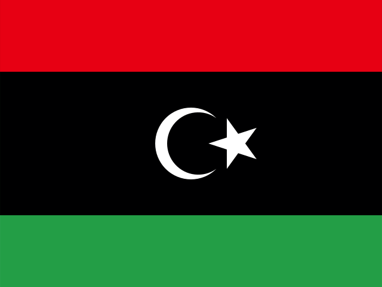
リビア
アラブ人、ベルベル系 ／ 「急ぐ者は、つまずきやすい」— 落ち着いて行動する大切さを表す言葉。

リヒテンシュタイン
リヒテンシュタイン人、スイス系、オーストリア系 ／ "Der Apfel fällt nicht weit vom Stamm"(リンゴは木から遠くへは落ちない)— 子は親に似るものだという意味のドイツ語圏のことわざ。

リトアニア
リトアニア人、ポーランド系、ロシア系 ／ "Kas turi darbą, turi ir duoną"(仕事を持つ者はパンも持つ)— 働くことの大切さを説くリトアニアのことわざ。

ルクセンブルク
ルクセンブルク人、ポルトガル系、フランス系 ／ "Mir wëlle bleiwe wat mir sinn"(我々は我々のままでありたい)— 国の独自性を大切にする国民性を表す言葉。

マダガスカル
メリナ人、ベツィレオ人、その他マダガスカル系諸民族 ／ "Ny fitiavana no fototry ny fiainana"(愛こそが人生の基盤である)— マダガスカルで大切にされる考え方を表すことわざ。

マラウイ
チェワ人、ロムウェ人、ヤオ人 ／ 心の在り方を大切にする「良い心こそが人の支えである」ということわざが伝わり、他者への思いやりを重んじる国民性を表している。

マレーシア
マレー系、中国系、インド系 ／ "Bagai aur dengan tebing"(竹と川岸のように)— 互いに支え合う関係を表すマレーのことわざ。
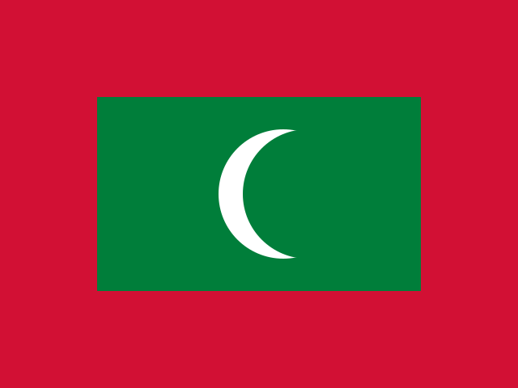
モルディブ
モルディブ人(南アジア・アラブ・アフリカ系の混血) ／ 「時は誰も待ってくれない」— 時間を大切にすることを説く、モルディブに伝わることわざ。

マリ
バンバラ人、フラニ人、ドゴン人 ／ 「知は尽きることがない」ということわざが伝わり、学び続ける姿勢を大切にする文化がある。

マルタ
マルタ人 ／ 「成長するには苦労が必要だ」— 努力の大切さを説くマルタのことわざ。

マーシャル諸島
マーシャル人 ／ "Jepilpilin ke ejukaan"(力を合わせてこそ成し遂げられる)— 国章にも刻まれるマーシャル諸島の標語で、共同体の団結を重んじる価値観を表す。

モーリタニア
ムーア人、プラー人、ソニンケ人 ／ "الصبر مفتاح الفرج"(忍耐は解決への鍵)— アラビア語圏で広く知られる、忍耐強さを説くことわざ。

モーリシャス
インド系、クレオール系、中国系 ／ "Small island, big heart"(小さな島に大きな心を)— 多民族・多宗教が調和して暮らすモーリシャスの国民性を表すフレーズとして親しまれている。

メキシコ
メスティーソ(混血)、先住民系、ヨーロッパ系 ／ "Camarón que se duerme, se lo lleva la corriente"(眠っているエビは流れに持っていかれる)— 油断せず努力を続けることの大切さを説くスペイン語のことわざ。

ミクロネシア連邦
チューク系、ポンペイ系、コスラエ系 ／ 「大きな石も、小さな石の積み重ねでできている」— 協力と積み重ねの大切さを表す、太平洋の島々に伝わる考え方。

モルドバ
モルドバ人(ルーマニア系)、ウクライナ系、ロシア系 ／ "Cine sapă groapa altuia, cade singur în ea"(他人のために穴を掘る者は、自らその穴に落ちる)— 自業自得を戒めるルーマニア語のことわざ。

モナコ
フランス系、モナコ人、イタリア系 ／ "Deo Juvante"(神の助けを得て)— モナコ公国の公式標語で、国章にも刻まれている。

モンゴル
ハルハ・モンゴル人、カザフ系 ／ 「良い馬に乗れば、道のりも短く感じる」— 遊牧の伝統から生まれた、モンゴルに伝わることわざ。

モンテネグロ
モンテネグロ人、セルビア系、ボシュニャク系 ／ "Bolje časno umrijeti, nego sramotno živjeti"(恥じて生きるより、名誉のうちに死ぬ方がよい)— 誇りを重んじるモンテネグロの気風を表すことわざ。

モロッコ
アラブ系、ベルベル人(アマジグ) ／ "الجار قبل الدار"(家より先に隣人を選べ)— 良い隣人関係を大切にするアラビア語のことわざ。

モザンビーク
マクア人、ツォンガ人、ショナ人 ／ 「一本の手では、水をすくえない」— 協力の大切さを説く、ポルトガル語圏アフリカに伝わることわざ。

ミャンマー
ビルマ族、シャン族、カレン族 ／ 「水牛が争えば、草がつぶれる」— 争いが弱い立場の者に被害を及ぼすことを説くビルマのことわざ。

ナミビア
オヴァンボ人、ヘレロ人、ダマラ人 ／ 「一本の指では、しらみもつぶせない」— 協力の大切さを説く、南部アフリカに広く伝わることわざ。
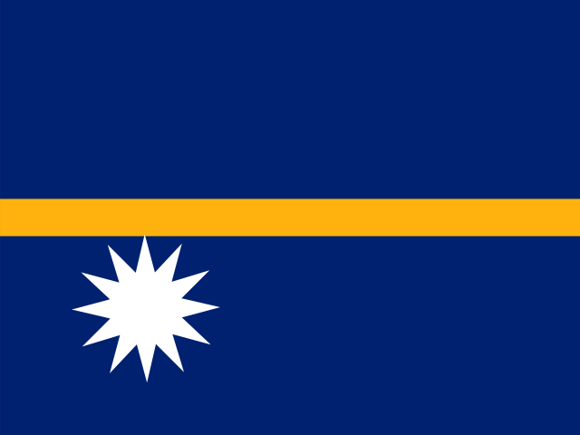
ナウル
ナウル人 ／ 「小さな島にも、大きな誇りがある」— 資源の盛衰を経験してきたナウルの人々に伝わる言葉。

ネパール
パハリ系、ネワール人、タルー人 ／ 「一年中がティハール祭、毎日がダサイン祭のように」— 日々を楽しみ前向きに生きる姿勢を表すネパールのことわざ。

オランダ
オランダ系、移民系(トルコ系、モロッコ系など) ／ "Wie het kleine niet eert, is het grote niet weerd"(小さなことを大切にしない者は、大きなことにも値しない)— 小さな物事を大切にする姿勢を説くオランダのことわざ。
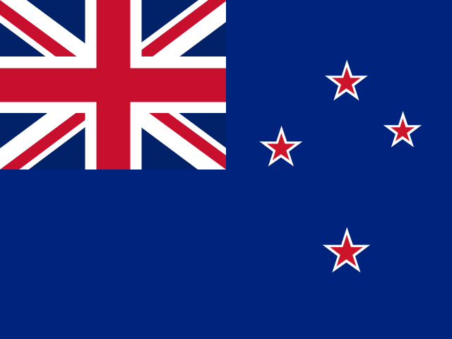
ニュージーランド
ヨーロッパ系、マオリ、アジア系 ／ "He aha te mea nui o te ao? He tāngata, he tāngata, he tāngata"(この世で最も大切なものは何か。それは人、人、人である)— マオリに伝わる、人とのつながりを最も重んじることわざ。
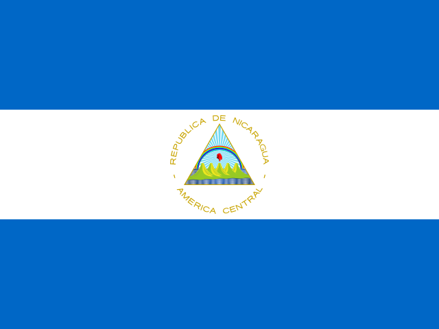
ニカラグア
メスティーソ(混血)、ヨーロッパ系、先住民系 ／ "Aunque la mona se vista de seda, mona se queda"(猿は絹をまとっても猿のまま)— 本質は変わらないことを説くスペイン語のことわざ。

ニジェール
ハウサ人、ジェルマ人、トゥアレグ人 ／ 「急いでいる者は、道を間違える」— 焦らず物事を進めることを説く、ハウサ語圏に伝わることわざ。

ナイジェリア
ハウサ人、ヨルバ人、イボ人 ／ "Ìwà lẹ́wà"(人柄こそが美である)— 内面の美徳を重んじるヨルバ語のことわざ。

北朝鮮
朝鮮民族 ／ "먼 친척보다 가까운 이웃이 낫다"(遠い親戚より近くの他人)— 朝鮮半島に広く伝わる、身近な人間関係を大切にすることわざ。

北マケドニア
マケドニア人、アルバニア系 ／ "Работата го краси човекот"(仕事が人を輝かせる)— 勤勉さを重んじるマケドニアのことわざ。

ノルウェー
ノルウェー人、サーミ(先住民族) ／ "Den som gapar over for mye, mister ofte hele stykket"(欲張りすぎる者は、しばしば全てを失う)— 欲張らないことを説く北欧に伝わることわざ。


パキスタン
パンジャブ人、パシュトゥン人、シンド人 ／ 「急いで飲む水は喉に詰まる」— 物事を焦って行うと失敗するという意味。

パラオ
パラオ人(ミクロネシア系)、フィリピン系、その他アジア系 ／ 「海は誰のものでもなく、皆のもの」— 自然を分かち合い大切にする島の精神を表す言葉。

パナマ
メスティーソ、アフリカ系、先住民系 ／ 「川の水を見ずに橋を渡るな」— 慎重に物事を見極めてから行動せよという意味。

パプアニューギニア
メラネシア系(数百の部族) ／ 「一本の木では家は建たない」— 協力の大切さを示す言葉。

パラグアイ
メスティーソ(先住民とヨーロッパ系の混血)が大多数 ／ 「ゆっくり急げ」— 焦らず着実に物事を進めよという意味の言葉が親しまれている。

ペルー
メスティーソ、先住民(ケチュア・アイマラ)、ヨーロッパ系 ／ 「山を動かすのではなく、一歩ずつ登れ」— 着実な努力の大切さを説く言葉。

フィリピン
タガログ人、ビサヤ人、イロカノ人など多数の民族 ／ 「小さな穴が大きな船を沈める」— 小さな問題も放置すると大きな災いになるという意味。

ポーランド
ポーランド人が大多数 ／ 「客人は家の中の神様」— 客をもてなすことを大切にする文化を表す言葉。

ポルトガル
ポルトガル人が大多数 ／ 「早起きの神は助ける」— 早起きして努力する者に幸運が訪れるという意味。


セントクリストファー・ネイビス
アフリカ系が大多数 ／ 「小さな斧でも大木を倒せる」— 小さな力でも継続すれば大きな成果を得られるという意味。
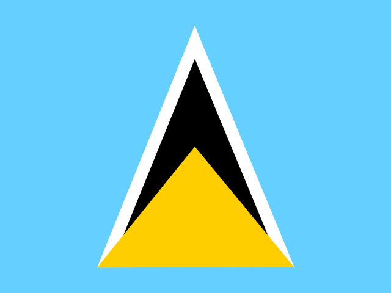
セントルシア
アフリカ系が大多数 ／ 「ゆっくり行く者が遠くまで行く」— 焦らず着実に進むことの大切さを説く言葉。

セントビンセント・グレナディーン
アフリカ系が大多数、混血、先住民系 ／ 「海の近くに住む者は魚と共に生きる」— 環境に応じた暮らしの知恵を表す言葉。

サモア
サモア人(ポリネシア系)が大多数 ／ 「サモアの道(ファアサモア)を忘れるな」— 伝統と共同体を大切にする精神を表す言葉。
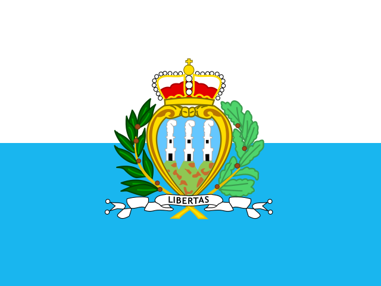
サンマリノ
サンマリノ人、イタリア人 ／ 「自由の代償は絶えざる警戒」— 自由と独立を守り続けてきた国の精神を表す言葉。

サントメ・プリンシペ
混血(アフリカ系とポルトガル系)が大多数 ／ 「小さな島も大きな海を知る」— 小さな国でも広い世界とつながっているという意味。

サウジアラビア
アラブ人が大多数 ／ 「ラクダが通った跡には道ができる」— 先人の経験が後の道しるべになるという意味。

セネガル
ウォロフ人、フラ人、セレール人 ／ 「一本の枝で火は熾せない」— 協力することの大切さを説く言葉。

セルビア
セルビア人が大多数、ハンガリー系 ／ 「急いで結んだ結び目はすぐにほどける」— 物事を焦って行うことへの戒め。

セーシェル
混血(アフリカ・ヨーロッパ・アジア系)が大多数 ／ 「小さな島でも大きな心を持つ」— 国の規模に関わらずおおらかであるという意味。

シエラレオネ
テムネ人、メンデ人など多数の民族 ／ 「一人の知恵より、多くの知恵」— 話し合いと協力の大切さを説く言葉。

シンガポール
中華系、マレー系、インド系 ／ 「一滴の水も集まれば川になる」— 小さな努力の積み重ねが大きな成果を生むという意味。

スロバキア
スロバキア人が大多数、ハンガリー系、ロマ ／ 「働かざる者、パンを得ず」— 努力の対価として実りを得るという教え。

スロベニア
スロベニア人が大多数 ／ 「ゆっくり進めば遠くまで行ける」— 焦らず着実に進むことの大切さを説く言葉。
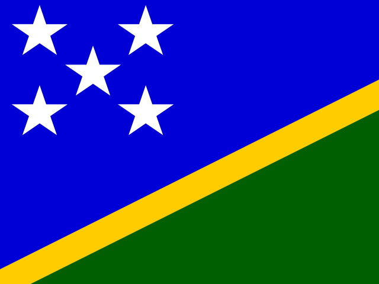
ソロモン諸島
メラネシア系が大多数 ／ 「一本の木より森の方が強い」— 団結の大切さを説く言葉。

ソマリア
ソマリ人が大多数 ／ 「ラクダを持つ者は忍耐を持つ」— 忍耐強さの美徳を説くことわざ。

南アフリカ
アフリカ系(バンツー系諸民族)、ヨーロッパ系、カラード ／ 「ウブントゥ(人は人によって人となる)」— 他者との関わりの中で人間性が育まれるという南部アフリカの思想。

韓国
韓民族がほぼ全て ／ 「始まりが半分」— 物事は始めることが最も大切だという意味。

南スーダン
ディンカ人、ヌエル人、その他先住民族 ／ 「川を渡るまでは、ワニを侮辱するな」— 危険が去るまでは油断しないという戒め。

スペイン
スペイン人(カスティーリャ系)、カタルーニャ系、バスク系 ／ "No hay mal que por bien no venga"(どんな悪いことにも良い面がある)— 逆境の中にも学びがあるという意味。

スリランカ
シンハラ人、スリランカ・タミル人、ムーア人 ／ 「一滴一滴が集まって、海になる」— 小さな積み重ねが大きな成果につながるという意味。

スーダン
アラブ系、ヌビア人、その他アフリカ系諸民族 ／ 「忍耐は、鍵の中の鍵」— 忍耐強さがあらゆる問題を解決する鍵になるという意味。

スリナム
インド系、クレオール(混血)、ジャワ系 ／ "Eendracht maakt macht"(団結は力なり)— オランダ語由来の言葉で、協力の大切さを表す。

スウェーデン
スウェーデン系、フィンランド系、サーミ人 ／ "Den som gapar över mycket mister ofta hela stycket"(欲張りすぎると、すべてを失う)— 欲張らず着実にという教え。

スイス
スイス系(ドイツ語系)、フランス語系、イタリア語系 ／ "Alles hat ein Ende, nur die Wurst hat zwei"(すべてに終わりがあるが、ソーセージには二つある)— ユーモラスに物事の終わりを表す言い回し。

シリア
アラブ人、クルド人、その他少数民族 ／ 「壁には耳がある」— 秘密は漏れやすいので言葉に気をつけよという戒め。

タジキスタン
タジク人、ウズベク人 ／ 「一人の敵は多く、百人の友は少ない」— 敵を作らず、多くの友を持つことの大切さを説く言葉。

タンザニア
バントゥー系諸民族(スクマ人など120以上の民族) ／ 「一本の指では、シラミもつぶせない」— 協力の大切さを表すスワヒリ語のことわざ。

タイ
タイ人、華人系、マレー系 ／ 「象の前で、蚊を叩くな」— 大きな相手と争う前に力の差を考えよという戒め。
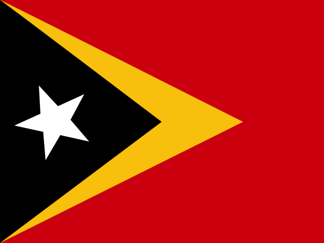
東ティモール
テトゥン人、その他先住民族 ／ 「小さな舟も、大きな海を渡る」— 小さな国でも大きな志を持てるという意味を込めた言い回し。

トーゴ
エウェ人、カビエ人、その他アフリカ系諸民族 ／ 「一本の木では、森はできない」— 協力の大切さを表す西アフリカで広く知られる言い回し。

トンガ
ポリネシア系(トンガ人) ／ 「カヌーを漕ぐ者は皆、同じ方向を向く」— 協力して一つの目標へ進むことの大切さを表す言葉。
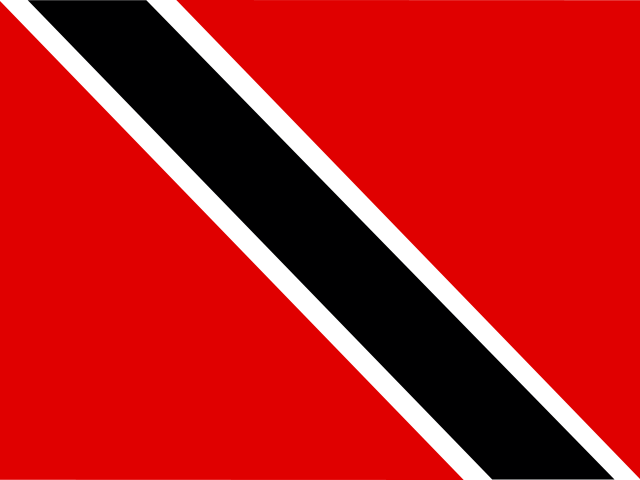
トリニダード・トバゴ
インド系、アフリカ系、混血 ／ 「小さな斧でも、大きな木を倒せる」— 小さな力でも根気強く続ければ大きな成果を得られるという意味。

チュニジア
アラブ系、ベルベル系 ／ 「急いで結んだ結び目は、すぐにほどける」— 物事は焦らず丁寧に進めるべきという意味。

トルコ
トルコ系、クルド系 ／ 「一杯のコーヒーには、40年の友情の思い出がある」— もてなしと人とのつながりを大切にする文化を表す言葉。

トルクメニスタン
トルクメン人、ウズベク人 ／ 「馬は人の翼である」— アハルテケなど名馬を育んできた遊牧文化を反映した言葉。

ツバル
ポリネシア系 ／ 「小さなカヌーでも、大海を渡れる」— 小さな島国でも大きな志を持てるという意味を込めた言い回し。

ウガンダ
ガンダ人、ニャンコレ人、その他アフリカ系諸民族 ／ 「賢い人は、耳で聞くことより多くを目で学ぶ」— 経験から学ぶことの大切さを表す言葉。

ウクライナ
ウクライナ人、ロシア系 ／ 「自分の土地は、他国の楽園よりも尊い」— 故郷を大切にする気持ちを表す言葉。

アラブ首長国連邦
首長国連邦国民(エミラティ)、南アジア系、その他アラブ・アジア系移住者 ／ 「ラクダの背に乗る者は、地平線を恐れない」— 困難を恐れず前へ進む姿勢を表す砂漠の民の言葉。

イギリス
イングランド系、スコットランド系、ウェールズ系 ／ "The early bird catches the worm"(早起きの鳥は虫を捕まえる)— 早く行動する者が得をするという意味。

アメリカ合衆国
ヨーロッパ系、アフリカ系、ヒスパニック系 ／ "The pursuit of happiness"(幸福の追求)— 独立宣言に記された、個人の自由と幸福を尊ぶ国の精神を表す言葉。

ウルグアイ
ヨーロッパ系(スペイン系・イタリア系)、混血 ／ 「マテ茶を分け合う者は、友になる」— マテ茶を回し飲みする習慣に由来する、友情を大切にする言葉。

ウズベキスタン
ウズベク人、タジク人 ／ 「知識は宝の中の宝」— 学ぶことの価値を説く言葉。